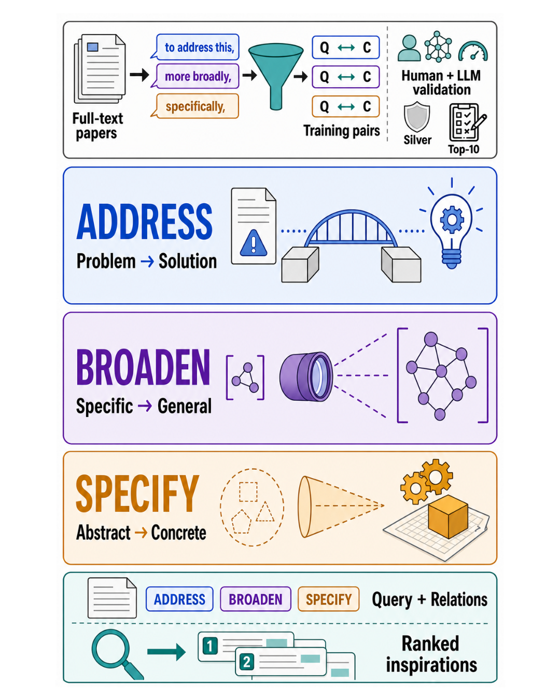
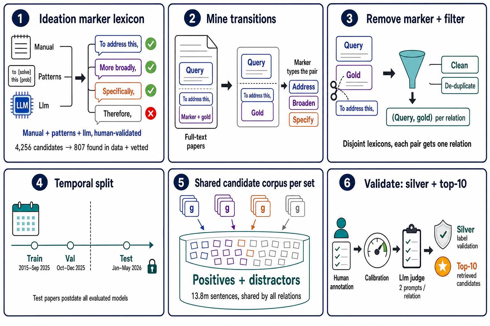
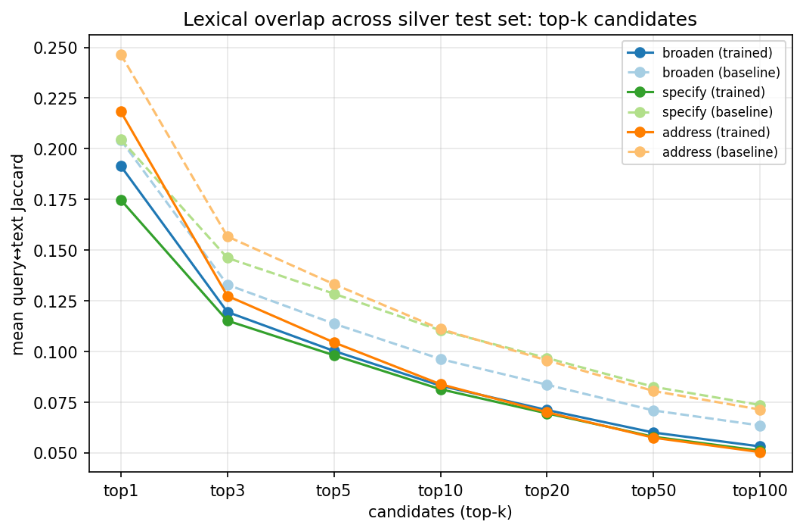

Retrieved scientific literature can serve as inspiration for both human and AI scientists. Inspiration can take different forms: prior work may directly suggest how to address a problem, or surface directions at different levels of abstraction—zooming out to a more general view or zooming in to a concrete realization. We introduce Ratio (Retrieval Across Typed Ideation Operations), a large-scale benchmark in which relevance is defined by three operations which we name ideation moves: ADDRESS retrieves potential approaches for stated problems, BROADEN retrieves more general formulations, and SPECIFY retrieves concrete instantiations. Ratio is constructed from millions of full-text scientific papers across CS literature via a general recipe that extends discourse-marker distant supervision—previously used only for classification—to corpus-scale retrieval, combined with extensive LLM and human vetting. Experiments show that operation-specific fine-tuning substantially boosts retrievers but leaves much room for further improvements. Ratio provides a scalable training and evaluation framework for retrieval components that support literature-grounded ideation, opening up new research avenues on scientific inspiration retrieval.
Engaging with prior work is central to how researchers develop new ideas. Consider a researcher grappling with reward hacking in RL-trained LLMs. Three different inspirations may be helpful: one proposing a method (e.g., reward-model ensembles), one zooming out to a more general principle (e.g., Goodhart's law), and one zooming in on a concrete instantiation of that principle in a new setting (e.g., recommender systems gaming engagement metrics). Each one enables a distinct move through the ideation space—addressing a problem, abstracting it, or grounding it.
Most scholarly retrieval benchmarks evaluate topical relevance or whether a document answers a search query. These criteria do not distinguish between passages that play different ideation roles. Ratio organizes retrieval around three moves that capture complementary forms of inspiration:
The query articulates a problem; the candidate is an approach or insight that can help address it.
The candidate reformulates the query at a broader scope, such that the query can be viewed as a particular instance of it.
The candidate instantiates or operationalizes the query through a concrete case, mechanism, or example.

We construct Ratio from full-text scientific papers using discourse-marker supervision and human–LLM validation to support retrieval across three ideation moves: ADDRESS, BROADEN, SPECIFY.
Authors routinely signal how a sentence relates to its predecessor with discourse markers. We exploit this to harvest query–gold pairs directly from full-text papers:
These labels are not weak proxies: a marker such as “To address this issue,” is an explicit, author-asserted judgment by a domain expert that the following statement constitutes a solution direction for the stated problem. Unlike prior discourse-marker distant supervision, which is confined to sentence-pair classification, we extend markers to define relation-conditioned ideation retrieval over a corpus of millions of candidates: the marker is stripped from the input and determines which relation a candidate must instantiate with respect to a query, evaluated by ranking against a shared candidate corpus.
Move-specific marker lexicons are built by an iterative multi-stage process combining manual corpus analysis, rule-based (Hearst-style) pattern expansion, and generation by multiple LLMs, followed by expert review and LLM validation. Of 4,256 candidate markers, 807 fired in the corpus; two NLP experts independently vetted all 807 and found every one valid. Markers rejected during curation become distractor markers whose sentences are added to the candidate pool as hard negatives, removing pool-membership shortcuts.

Construction of Ratio. Validated discourse markers identify ADDRESS, BROADEN, and SPECIFY transitions in full-text papers. The marker is removed from the candidate text, publication dates determine the temporal partitions, and all operations retrieve from a shared candidate corpus.
Ratio comprises 2,779,177 SPECIFY, 793,347 ADDRESS, and 15,592 BROADEN pairs. Splits are temporal to enforce a strict approach against contamination: training uses papers from 2015 through September 2025, validation the remainder of 2025, and the test set papers from 2026 only—postdating the public release of every evaluated model, so no backbone could have encountered them during pre-training. The candidate corpus of each split is shared by all three relations, so selecting the retrieval operation does not reveal which candidates are relevant.
| Relation | Train | Validation | Test | |||
|---|---|---|---|---|---|---|
| Queries | Candidates | Queries | Candidates | Queries | Candidates | |
| SPECIFY | 2,605,515 | 13,787,834 | 79,583 | 361,172 | 94,079 | 404,371 |
| ADDRESS | 719,136 | 31,963 | 42,248 | |||
| BROADEN | 13,687 | 495 | 1,410 | |||
Temporal split with a shared candidate pool across relations. Each query is paired with a single gold candidate; the candidate corpus of each split is shared by all relations.
We complement the mined benchmark with a human-calibrated, LLM-validated silver test set of 13,729 queries. For each relation we write 4–6 candidate validation prompts and keep the two that best match expert judgments (F1 of .85–.88 for ADDRESS and SPECIFY, .76 for BROADEN, against 300 expert annotations); inter-annotator F1 among five experts is .87 / .90 / .82. A pair is kept only if both prompts accept it. We further validate top-10 retrieved candidates to account for false negatives.
We evaluate BM25 and three dense retrievers (all-mpnet-base-v2, ModernBERT-embed-large, Stella-en-1.5B-v5), each as a pre-trained baseline and after relation-specific contrastive fine-tuning. Baseline pre-trained models provide limited gains over BM25, whereas move-specific fine-tuning yields substantial improvements, increasing performance by 1.5×–2.7×. ModernBERT-embed-large is the strongest model on every operation:
| MRR@10 (silver test set) | SPECIFY | ADDRESS | BROADEN |
|---|---|---|---|
| BM25 (unigram) | 17.6 | 8.7 | 10.9 |
| ModernBERT-embed-large — baseline | 26.0 | 11.1 | 17.3 |
| ModernBERT-embed-large — fine-tuned | 44.0 | 29.5 | 27.3 |
Headline results on the silver test set (recommended-prefix setup; full tables for all models, setups, and metrics in the paper). Even the best model fails for most ADDRESS and BROADEN queries, and MRR@100 exceeds MRR@10 by at most 0.8 points—failures are not near-hits.
Single-positive metrics are a scalable lower bound: they test whether the retriever ranks one known-valid inspiration highly, not whether the mined positive is the only valid one. We therefore judge each of the top-10 retrieved candidates independently with human-calibrated LLM prompts (400 queries per relation, 24K judged pairs). After fine-tuning, at least one accepted candidate appears in the top 10 for 89.0% of SPECIFY and 80.0% of ADDRESS queries (hard agreement: both prompts accept), with accepted candidates per ADDRESS list rising from 0.60 to 2.36.
On tuned ADDRESS, for 40.8% of queries the gold is not ranked in the top 10 yet the judge accepts an alternative candidate; counting any accepted candidate raises ADDRESS MRR@10 from 29.5 to 48.7. These discovered positives overlap lexically with the query less than the mined positives do, and 88–94% of all accepted candidates come from papers other than the query's—tuned retrievers surface valid solution directions from the broader literature, i.e., inspiration in the intended sense, rather than exploiting adjacency or other shallow shortcuts.

Query–candidate lexical overlap by relation, over retrieval depth on the silver test set (ModernBERT-embed-large). Lexical overlap is Jaccard score with unigrams, stopwords removed, snowball-stemmed. Tuned retrieval pulls lower-overlap candidates than the off-the-shelf baseline.
@misc{sharon2026ratio,
title={RATIO: A Benchmark for Retrieval Across Typed Ideation Operations in Scientific Literature},
author={Maayan Sharon and Tom Hope},
year={2026},
eprint={TODO},
archivePrefix={arXiv},
primaryClass={cs.CL},
url={TODO},
}